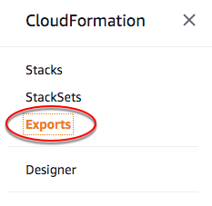

エクスポートされた出力値をインポートするスタックのリスト
出力値をエクスポートすると、同じ AWS アカウントおよびリージョンにあるスタックでその値をインポートできます。どのスタックが特定の出力値をインポートしているかを確認するには、リストインポートアクションを使用します。
エクスポートされた出力値を削除または編集するには、ListImports アクションを使用してそれらをインポートするスタックを追跡し、そのスタックを編集して、出力値を参照する Fn::ImportValue 関数を削除します。エクスポートされた出力値を削除または編集する前に、エクスポートされた出力値を参照するインポートをすべて削除する必要があります。
出力値のエクスポートおよびインポートの詳細については、「スタックの出力値のエクスポート」を参照してください。
エクスポートされた出力値をインポートするスタックをリストするには (コンソール)
-
CloudFormation コンソール
の CloudFormation ナビゲーションペインで、[Exports] (エクスポート) を選択します。  -
特定のエクスポート値をインポートするスタックを確認するには、そのエクスポート値の [Export Name] (エクスポート名) を選択します。CloudFormation により、エクスポートの詳細ページが表示され、値をインポートしているすべてのスタックがリスト表示されます。
エクスポートされた出力値をインポートするスタックをリストするには (AWS CLI)
-
エクスポートされた出力値の名前を指定して
aws cloudformation list-importsコマンドを実行します。CloudFormation から、値をインポートするスタックのリストが返されます。
エクスポートされた出力値をインポートするスタックをリストするには (API)
-
エクスポートされた出力値の名前を指定して
ListImportsAPI を実行します。CloudFormation から、値をインポートするスタックのリストが返されます。